「计算机科学」
课程链接：
https://www.bilibili.com/video/BV1EW411u7th
第一课 计算机早期历史
1、 计算机的实质
极其简单的组件，通过一层层的抽象，来做出复杂的操作。
2、计算的历史
这些设备让原先很费力的事情变得更快，更简单，更精确
- 公元前2500年：公认最早的计算设备算盘发明于”美索不达米亚”，它是手动计算器，用来帮助加减数字，它存储着当前的计算状态，类似于如今的硬盘。
- 公元前2500年-公元1500年：星盘让船只在海上计算纬度，计算尺帮助计算乘法和除法，时钟计算日出、潮汐、天体位置、计时。
- 公元1613年：computer的概念出现，当时是指专门做计算的职业。
- 1694年：德国博学家 戈特弗里德·莱布尼茨 建造的步进计算器是世界上第一台能自动完成加减乘除的计算器，步进计算器有点像汽车里的里程表，不断累加里程数。
- 1694-1900年：预先算好的计算表类似字典，可用于查找各种庞大的计算值。
- 1823年：查尔斯·巴贝奇提出的差分机，可以做函数计算，不幸的是，该项目最终放弃了。但在 1991 年，历史学家根据查尔斯·巴贝奇的草稿做了一个差分机，而且它还管用。
- 差分机建造期间：查尔斯·巴贝奇提出了更复杂的分析机，分析机是 “通用计算机”，它可以做很多事情，不只是一种特定运算，就像差分机，这台机器太超前了，所以没有建成。然而这种 “自动计算机” 的概念，是个跨时代的概念，预示着计算机程序的诞生。英国数学家 埃达·洛夫莱斯 给分析机写了假想的程序，她说：“未来会诞生一门全新的，强大的，专为分析所用的语言”，因此 Ada 被认为是世上第一位程序员。
- 1890年美国人口普查：赫尔曼·何乐礼发明了打孔卡片制表机，创办制表机器公司，这家公司后来在 1924 年与其它机械制造商合并，成为了 “国际商业机器公司”，简称 IBM（International Business Machines）
第二课 电子计算机
继电器 → 真空管 → 晶体管
1944年： 最大的机电计算机是IBM给二战同盟国制造的哈佛马克一号给“曼哈顿计划”跑模拟，使用继电器，利用电磁效应控制机械开光，开关速度慢，机械磨损严重，故障率高。 最早因虫子进入继电器导致故障，电脑出问题就说出了bug（虫子）
1904年：英国物理学家约翰·弗莱明开发的新的电子组件叫“热电子管”，这是世界上第一个真空管。
1906年：美国发明家李·德富雷斯特加入第三个控制电极改进真空管，可以断开或闭合电路，每秒闭合可以上千次，且没有机械磨损，但造价昂贵，十分脆弱，像灯泡一样会烧坏。
1940年代：真空管成本和可靠性得到改进，标志计算机从机电转向电子。
1943年：第一次大规模使用真空管的计算机是巨人计算机，用来破解纳粹通信，巨人被认为是第一个可编程的电子计算机，编程的方法是把几百根电线插入插板，虽然”可编程” ，但还是要配置它。
1946年：在”宾夕法尼亚大学”完成建造电子数值积分计算机 ENIAC,这是世上第一个真正的通用可编程的电子计算机，因为真空管很多，所以故障很常见，ENIAC 运行半天左右就会出一次故障。
1955年：美国空军的 AN/FSQ-7 计算机，真空管计算机都达到了极限，为了降低成本和大小，同时提高可靠性和速度，我们需要一种新的电子开关。
1947年：贝尔实验室发明了晶体管，一个全新的计算机时代诞生了。第一个晶体管每秒可以开关10000 次，而且比起玻璃制成，小心易碎的真空管，晶体管是固态的，晶体管可以远远小于继电器或真空管，导致更小更便宜的计算机出现。
1957年：IBM 608：第一个完全用晶体管，而且消费者也可以买到的计算机，IBM 很快把所有产品都转向了晶体管，把晶体管计算机带入办公室，最终引入家庭
第三课 布尔逻辑和逻辑门
1、计算机使用二进制的原因
- 计算机的元器件晶体管只有2种状态，闭合（True）&& 断开（False），用二进制可直接根据元器件的状态表示数值。
- 有一整个数学分支“布尔代数”存在，专门处理”真”和”假”，它已经解决了所有法则和运算。
- 状态越多，越难区分信号，容易混淆。
2、布尔代数的基本操作
1）非运算 命名：NOT门/非门 作用：反转输入值
| 输入 | 输出 |
|---|---|
| 1 | 0 |
| 0 | 1 |
实现： 半导体通电输入True，则线路接地，无输出电流，为False
半导体不通电输入False，则输出电流从右边输出，为True 
2)与运算 命名：AND门/与门 作用：输入都为真才为真
| 输入1 | 输入2 | 输出 |
|---|---|---|
| 0 | 0 | 0 |
| 0 | 1 | 0 |
| 1 | 0 | 0 |
| 1 | 1 | 1 |
实现：串联两个晶体管，当2个晶体管都通电时，输出才有电流，为True 
3)或运算 命名：OR门/或门 作用：输入有真就为真
| 输入1 | 输入2 | 输出 |
|---|---|---|
| 0 | 0 | 0 |
| 0 | 1 | 1 |
| 1 | 0 | 1 |
| 1 | 1 | 1 |
实现：并联两个晶体管，任一晶体管通电，输出就有电流，为True 
4)异或运算 命名：XOR门/异或门 作用：两个输入不同为真
| 输入1 | 输入2 | 输出 |
|---|---|---|
| 0 | 0 | 0 |
| 0 | 1 | 1 |
| 1 | 0 | 1 |
| 1 | 1 | 0 |
实现：先用一个OR门，将其与AND门并联，AND门与NOT门串联，最后让NOT与AND门并联，获得输出。

3、逻辑门的符号表示
抽象作用：将逻辑门简化，将逻辑门用于构建更大的组件，而不至于太复杂。
- 非门：用三角形+圆圈表示
- 与门：用D型图案表示
- 或门：用类似D向右弯曲的小飞船表示
- 异或门：用或门+一个笑脸表示
第四课 二进制
1、二进制原理和存储单位
- 计算机中的二进制表示：单个数字1或0
- 十进制与二进制的区别：
- 十进制有10个数字，0-9，逢10进1（不存在10这个数字），则每向左进一位，数字大10倍。
- 二进制有2个数字，0-1，逢2进1,（不存在2这个数字），则每向左进一位，数字大2倍。
- 存储单位含义及换算：
- 比特（bit）：一个二进制位
- 字节（Byte）：1 Byte = 8 bit 最早期的电脑是八位的，即以八位为单位处理数据。
- 千字节（KB）:1 KB = 2^10 Byte = 1024 Byte
- 百万字节（MB）：1 MB = 1024 KB
- 十亿字节（GB）：1 GB = 1024 MB
- 万亿字节（TB）：1 TB = 1024 GB
- 32位计算机与64位计算机 计算机一次处理数据的能力，是 32 位或 64 位
2、正数、负数、正数、浮点数的表示
IEEE754标准
- 整数
- 第一位表示正负 1为负 0为正（补码）
- 剩下32位表示数值
- 浮点数
- 小数点在数字间浮动，用类似科学计数法的方式存储 浮点数 = 有效位数 * 10^指数
- 第一位表示正负 1为负 0为正
- 第2-9位存指数
- 剩下23位存有效位数 eg.625.9=0.6259（有效位数）* 10^3（指数）
3、字符标准
ASCⅡ 美国信息交换标准代码 用7位编码表示128个字符

UNICODE编码 随着计算机在亚洲兴起，需要解决ASCⅡ不够表达所有语言的问题。为提高代码的互用性，而诞生的编码标准。UNICODE分为17个平面，每个平面有16位编码，总共有超过100万个位置，可满足所有语言的字符需求。
第五课 算术逻辑单元
1、什么是算术逻辑单元
命名：算术逻辑单元（Arithmetic&Logic Unit），简称ALU 组成：ALU有2个单元，算术单元（Arithmetic Unit）和逻辑单元（Logic Unit），算术单元负责计算机里的所有数字操作 作用：计算机中负责运算的组件，处理数字/逻辑的最基本单元
2、算术单元
1）半加器 作用：处理一位数值计算 输入：A,B 输出：总和（SUM），进位（CARRY）
| 输入A | 输入B | 进位 | 总和 |
|---|---|---|---|
| 0 | 0 | 0 | 0 |
| 0 | 1 | 0 | 1 |
| 1 | 0 | 0 | 1 |
| 1 | 1 | 1 | 0 |

抽象： 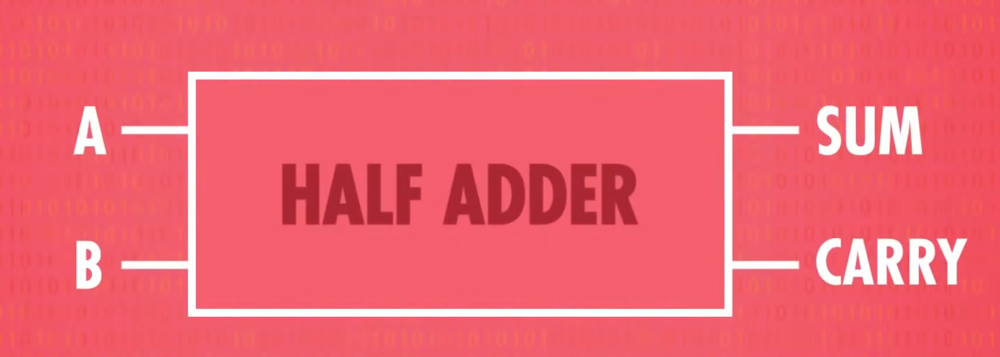
2)全加器 作用：处理超过1位的计算 输入：A,B,C 输出：总和（SUM），进位（CARRY)
| 输入A | 输入B | 进位1(A+B) | 总和1(A+B) | 输入C | 进位2(总和1+C) | 进位(进位1 OR 进位2) | 总和(总和1+C) |
|---|---|---|---|---|---|---|---|
| 0 | 0 | 0 | 0 | 0 | 0 | 0 | 0 |
| 0 | 0 | 0 | 0 | 1 | 0 | 0 | 1 |
| 0 | 1 | 0 | 1 | 0 | 0 | 0 | 1 |
| 1 | 0 | 0 | 1 | 0 | 0 | 0 | 1 |
| 0 | 1 | 0 | 1 | 1 | 1 | 1 | 0 |
| 1 | 1 | 1 | 0 | 0 | 0 | 1 | 0 |
| 1 | 0 | 0 | 1 | 1 | 1 | 1 | 0 |
| 1 | 1 | 1 | 0 | 1 | 0 | 1 | 1 |
原理：A+B通过半加器的结果和C进入下一个半加器，再用OR门判断是否进位
 抽象：
抽象：  3）使用半加器和全加器制作8位加法器 8位行波进位加法器：
3）使用半加器和全加器制作8位加法器 8位行波进位加法器：

过程说明：
- 用半加器处理第一位数（个位）的加法，得到的sum为第1位，进位参与下一个全加器的计算
- 第二位的两个加数和第一位的进位输入到全加器中，得到的sum为第2位，进位参与下一个全加器的计算
- 循环此过程，如果第8位的进位为1，说明两个数字的和超过了8位，会导致错误和不可预期的结果，所以应该尽量避免溢出。 现在电脑使用的加法器叫“超前进位加法器”
4）ALU的其他数学运算
- 加法
- 带进位的加法
- 减法
- 带借位的减法
- 取反
- 增量（+1）
- 减量（-1）
- 数字无法通过
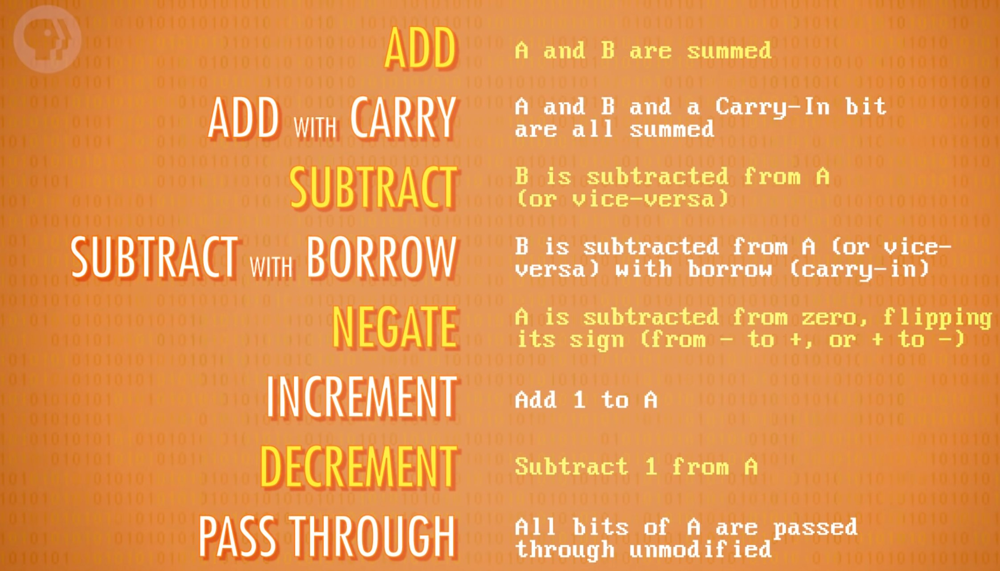
3、逻辑单元
逻辑单元执行逻辑操作，比如AND，OR 和 NOT 操作，也能做简单的数值测试
例如检验数字是不是0 
用一堆 OR 门检查其中一位是否为 1,哪怕只有一个 Bit (位) 是1，就能确定这个数字不是0，再用 NOT 门取反，只有输入的数字是 0，输出才为 1
4、符号表示
- 两个输入（INTPUT） A 和 B 8位
- 操作代码（OPERATION CODE）告诉 ALU 执行什么操作（加法减法…） 4位
- 输出结果（OUTPUT） 8位
- 一堆输出标志 1位
- 溢出标志(OVERFLOW)
- 零标志(ZERO)
- 负标志(NEGATIVE)

第六课 寄存器和内存
1、为什么需要内存
如果ALU计算出来的数据直接扔掉就没有意义了，有些操作还需要连续计算，需要一种方法把他们存起来，就用到了内存
2、锁存器
1）回路门
OR 门 作用：记录 1 原理：A不管输入 0 还是 1，输出始终为 1

AND 门 作用：记录 0 原理：A不管输入 0 还是 1，输出始终为 0 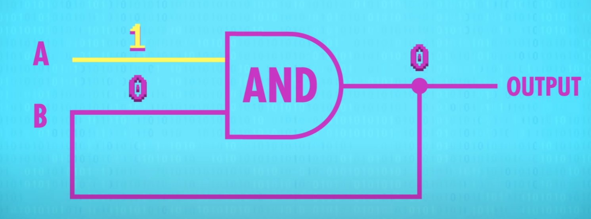
2）AND-OR锁存器 作用：存储 1 bit 数据 原理：将两种电路组合起来
- 设置（SET）输入，输出变为 1
- 重置（RESET）输入，输出变为 0
- SET和RESET都是 0，电路会输出最后放入的内容

3）门锁 AND-OR锁存器用两条线输入，麻烦难以理解
- 一条输入线（DATA INPUT） （设 0 或 1 存储数据）
- 一条允许写入线（WRITE ENABLE） （启用时允许写入，没启用时锁定）
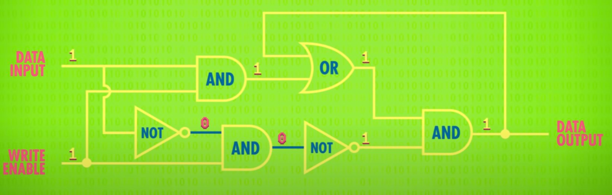
抽象：
- 允许写入线关闭（0）时，数据写入线无论是 0 或 1，输出都不会改变
- 允许写入线开启（1）时
- 数据写入线写入 1，输出变为 1；此时关闭允许写入线，写入线无论输入什么，输出都为 1，值被存起来了
- 数据写入线写入 0，输出变为 0；此时关闭允许写入线，写入线无论输入什么，输出都为 0，值被存起来了
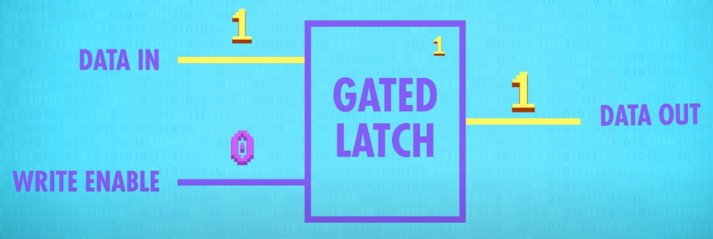
3、寄存器
概念：并排使用一组锁存器叫寄存器，寄存器能存多少bit叫位宽 并排放 8 个锁存器，可以存放 8 位信息，就是早期电脑用的 8 位寄存器，后来16位，到如今32位、64位 8 位寄存器：
- 写入寄存器前，用一根线连接所有允许写入线，设为 1 启用所有的锁存器
- 用 8 条数据线发数据，然后将允许写入线设回 0
- 8 bit 的值就被存起来了
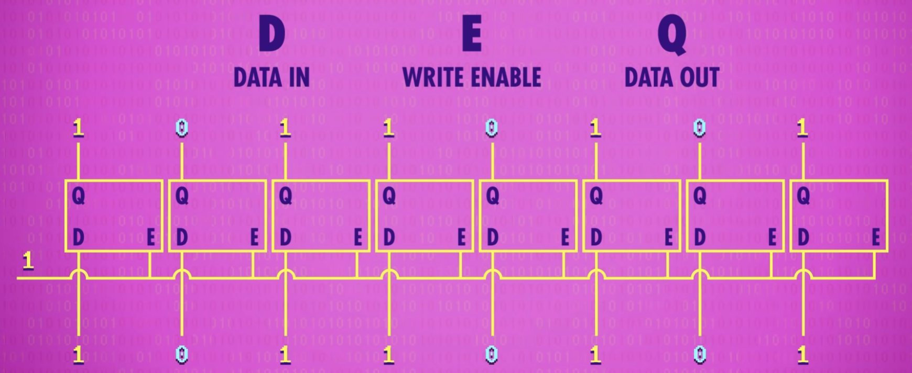
4、内存
1）门锁矩阵 对于很少的存储 bit，并排放锁存器勉强够用，但 64 位寄存器需要 64 条数据输入线，64 条输出线和 1 条允许写入线，加起来需要 129 条线，因此使用矩阵可以大大降低成本 16×16的锁存器组成的门锁矩阵便可存储256位，要启用某个锁存器就打开相应的行线和列线 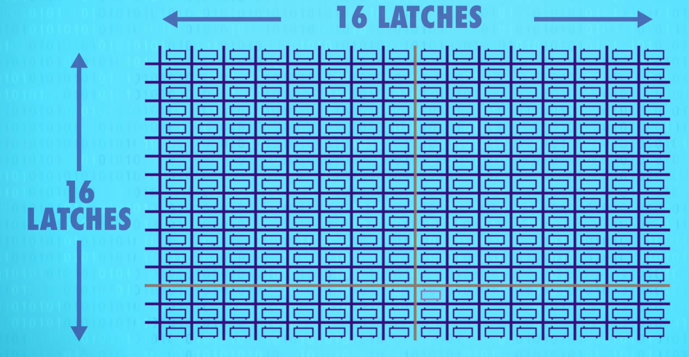
内部构造：
- 通过行列选择某一个寄存器，行线和列线均为 1 时，左边的AND门才输出为 1
- 所有寄存器共享一条允许写入线（WRITE ENABLE）
- 为了使某个寄存器进入允许写入的状态，允许写入线和行线、列线都必须是 1，上面的AND门才输出为 1
- 每次只有一个锁存器启用，可以共享使用一条数据线（DATA IN/OUT）传数据
- 使用类似允许写入线的允许读取线（READ ENABLE）从特定锁存器获取数据
256位的寄存器只需 1 条允许写入线，1 条允许读取线，1 条数据线和 16
+ 16 的行列线，加起来只有 35 条线 
2）256 位内存 为了将地址转换成行和列，需要用到多路复用器 原理：
- 为列编号，16列只需4位二进制编码（0000代表第一列，0001代表第二列，以此类推）
- 输入0000，多路复用器选择第一列，输入0001，多路复用器选择第二列
- 一个多路复用器处理行（row），另一个多路复用器处理列（column）

抽象：
- 8 bit地址（4 bit代表哪一行，4 bit代表哪一列）
- 允许写入线
- 允许读取线
- 数据线 读取内容
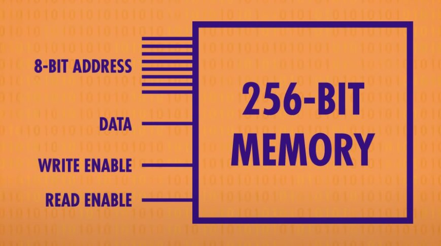
3）RAM 内存的一个重要特性是：可以随时访问任何位置，因此叫 “随机存取存储器” ，简称 RAM 8 个 256 位的内存并排放置
- 一行 8 个，可以存一个 8 bit数字，也就是一个字节
- 为了存一个 8 bit的数字，同时给 8 个 256 位内存一样的地址
- 每个存 1 bit，意味着可以在 256 个地址 存 256 个字节

不看作一堆单独的存储和电路，看做一个统一的可寻址的内存
- 一共有 256 个地址
- 每个地址可以读写一个 8 bit（也就是 1 字节）的值
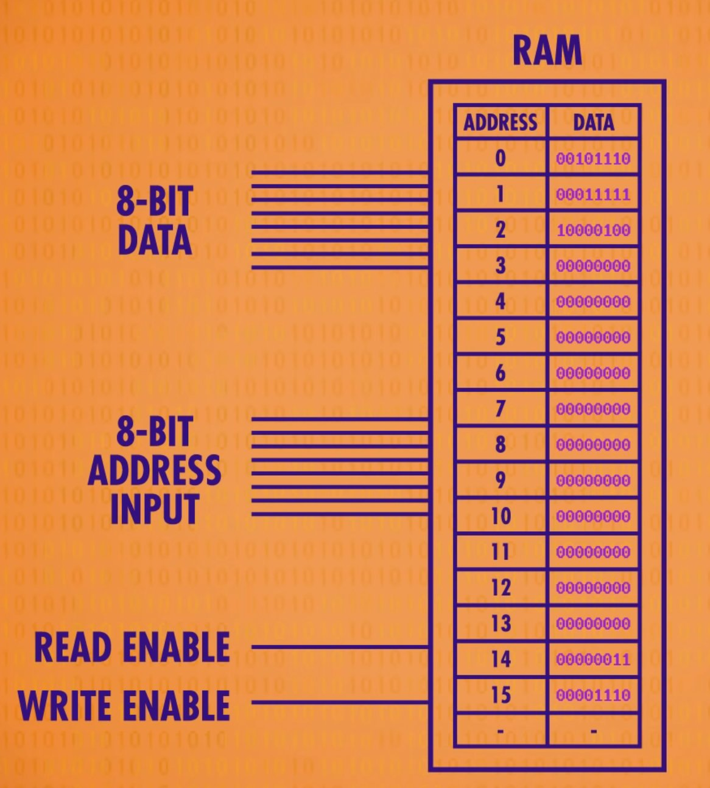
现代计算机的内存 扩展到上兆字节（MB）和千兆字节（GB）的方式，和这里一样不断把内存打包到更大规模，随着内存地址增多，内存地址也必须增长，8 位最多能代表 256 个内存地址（1111 1111 是255，0~255 一共 256 个数字）,要给千兆或十亿字节的内存寻址，需要 32 位的地址
这是一条真实的内存，上面焊了8个内存模块 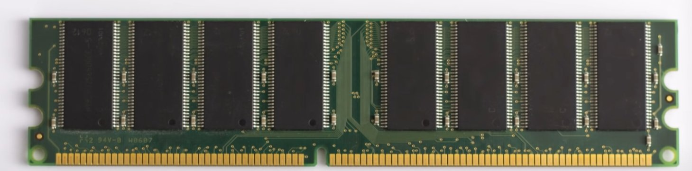
打开其中一个放大看到32个内存方块
放大其中一个方块，可以看到由 4 个小块组成 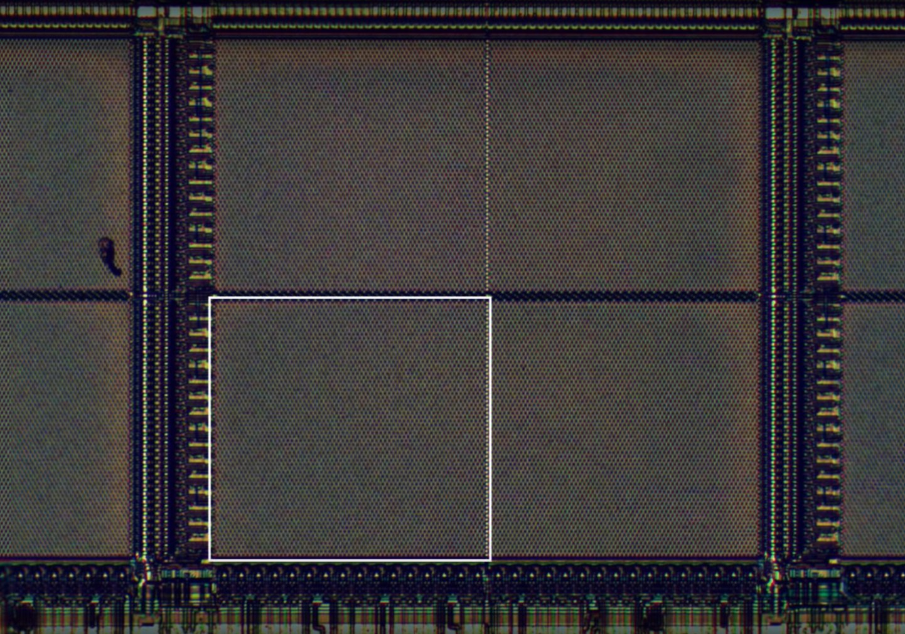
再放大可以看到存单个bit的矩阵，这是一个 128×64 bit的矩阵，总共 8192 bit 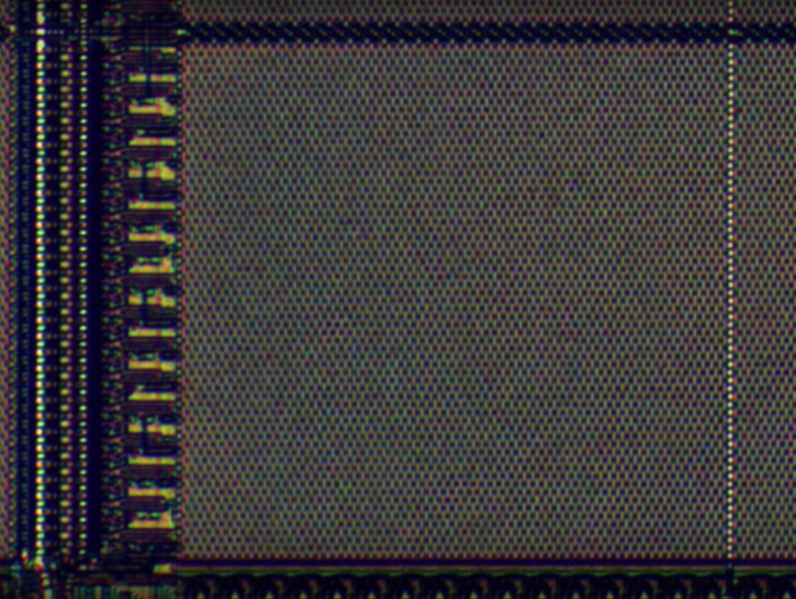 32 个内存方块每个都有 4 个矩阵，所以一个方格有 32768 个位 （8192 x 4 = 32768），而一共 32 个方格，一个芯片大约存 800 万位，一共 8 个芯片，所以总共有 800 万位，也就是 1 兆字节（1 MB），这是1980年代的RAM

第七课 中央处理器（CPU）
1、基本概念
- CPU（Central Processing Unit）：中央处理单元，是计算机的“心脏”，负责执行程序。
- 时钟速度：CPU “取指令→解码→执行” 的速度叫
“时钟速度”，单位是赫兹（Hz），表示频率
- 超频：修改时钟速度，加快CPU的速度，超频过多会让CPU过热或产生乱码
- 降频：降低时钟速度，达到省电的效果，对笔记本/手机很重要。 现代处理器可以按需求加快或减慢时钟速度，这叫 “动态调整频率”
- 指令：程序由一系列指令组成，指示计算机要做什么
- 数学指令，CPU 会让 ALU 进行数学运算
- 内存指令，CPU 会和内存通信，然后读/写值
- 指令表给CPU支持的所有指令分配一个ID,前 4 位存操作码（OPCODE），后 4 位代表数据来自哪里，可以是寄存器或内存地址
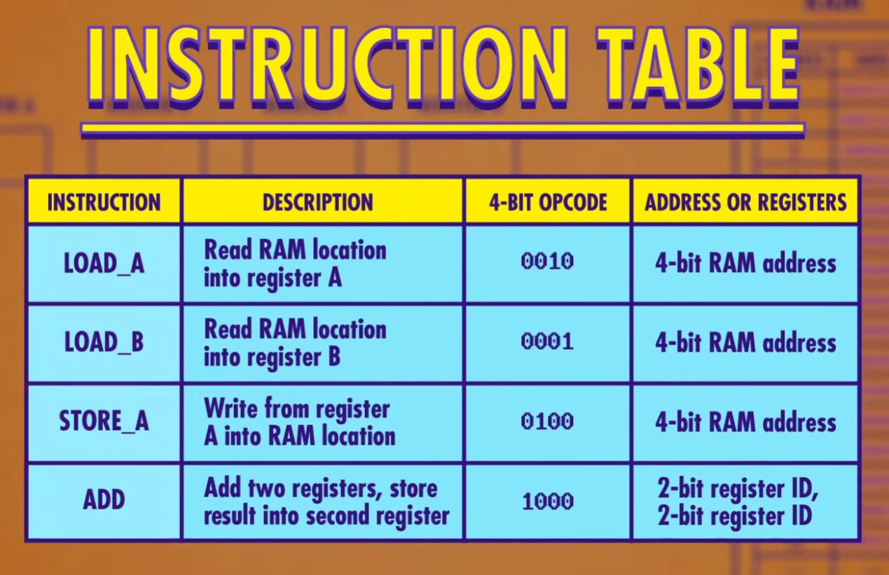
2、CPU工作原理
重点放在功能，而不是一根根线具体怎么连，当我们用一条线连接两个组件时，这条线只是所有必须线路的一个抽象，这种高层次视角叫 “微体系架构”。 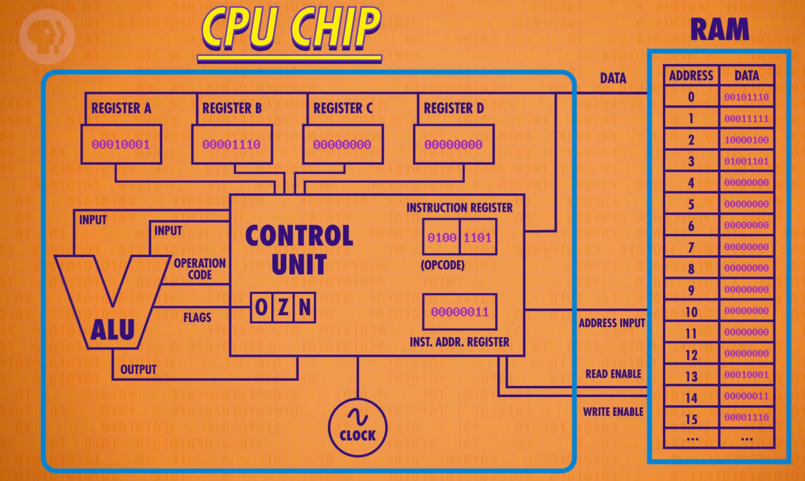
CPU和RAM通过数据线，地址线和允许读/写线通信 ##### 1）必备组件
- 内存（RAM)，程序可以存储在内存中
- CPU
- 数据寄存器（REGISTER A/B/C/D）来临时存数据和操作数据
- 控制单元（CONTROL UNIT）指挥CPU内的所有组件
- 1 个追踪程序运行到哪的指令地址寄存器（INSTRUCTION REGISTER），存当前指令的内存地址
- 1 个存当前指令的指令寄存器（INST.ADDR.REGISTER）
- 一堆指令解码逻辑电路
- 算术逻辑单元（ALU）负责处理运算
- 时钟负责管理CPU运行的节奏，以精确地间隔触发电信号，控制单元用这个信号推动CPU的内部操作
2）运行过程
取指令阶段 指令地址寄存器发送地址给RAM → RAM将对应地址的指令返回给指令寄存器 → 指令寄存器取到指令
解码阶段 指令寄存器发送指令给指令解码逻辑电路 → 指令解码逻辑电路根据指令表解码（逻辑门确认操作码）
执行阶段
- 控制单元根据指令需要打开RAM和数据寄存器的允许写入/读取线 → 将在RAM/数据寄存器读到的值写入数据寄存器/RAM → 让指令地址寄存器的值加 1，又到取地址阶段执行下一条指令
- 涉及计算时，控制单元启用相应数据寄存器作为ALU的输入，传递操作码告诉ALU要做什么 → ALU的输出结果暂时存储到控制单元自己的寄存器中 → 关闭ALU，控制单元把值写到相应的数据寄存器中 → 指令地址寄存器的值加 1
3、第一个CPU
Intel 4004 
第八课 指令和程序
CPU 之所以强大是因为它是可编程的，如果写入不同指令就会执行不同任务，CPU 是一块硬件，可以被软件控制
1）一些指令集
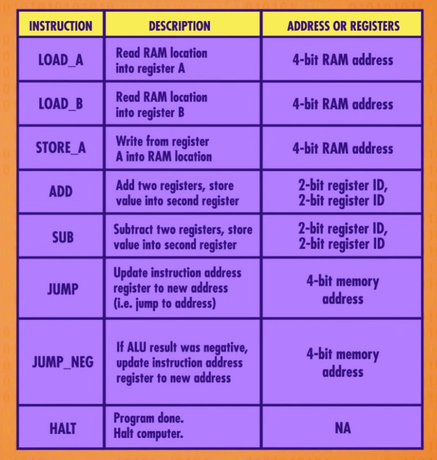
JUMP：让程序跳转到新位置，在底层的实现方式是把指令后 4 位代表的内存地址的值覆盖掉指令地址寄存器里的值 如果无条件JUMP到前面，程序会陷入死循环，无限JUMP
JUMP_NEGATIVE：它只在 ALU 的负标志（NEGATIVE）为真时，进行 JUMP
HALT：指令结束标志，很重要，能区分指令和数据 指令和数据都是存在同一个内存里的，它们在根本层面上毫无区别，都是二进制数
利用JUMP和HALT实现除法求余（循环减法） 
2）指令长度
这颗假设的CPU所有指令都是 8 位，操作码和地址只占 4 位，只能代表 16 个指令和操作 16 个地址 现代 CPU 用两种策略：
- 最直接的方法是用更多位来代表指令，比如 32 位或 64 位，这叫指令长度
- 可变指令长度，例如遇到HALT不需要额外数据会立即执行，遇到JUMP得知道JUMP后的位置值，这叫立即值 这样设计，指令可以是任意长度，但会让读取阶段变复杂
第九课 高级CPU设计
1、CPU如何提升性能
- 早期计算机的提速方式是减少晶体管的切换时间，但这种提速方法最终会碰到瓶颈
- 现代处理器在硬件层面设计除法等，可以直接给ALU除法指令；设计专门电路来处理，图形操作、视频解码、加密文档等
- CPU超高的时钟速度使RAM成了瓶颈，RAM需要找地址取数据输出数据，还要通过总线传输，CPU空等数据
2、缓存
解决延迟的方法之一是给CPU加一点RAM，叫做缓存（CACHE），缓存离
CPU 近, 一个时钟周期就能给数据，CPU 不用空等。
因为CPU里空间不大，一般缓存只有KB或MB 
- CPU从RAM拿数据时，RAM 不用传一个，可以传一批存入缓存中
- CPU取数据先去缓存取，缓存中取不到再去RAM取
- 如果想要的数据已经在缓存，叫缓存命中
- 如果想要的数据不在缓存，叫缓存未命中
- 缓存也可以当临时空间，存一些中间值，适合长/复杂的运算 这样会出现导致缓存与RAM不一致的问题，解决方法是缓存里每块空间设置一个特殊标记“脏位”来记录这种不一致，当缓存满了而CPU又要缓存时，清理缓存之前会检查“脏”位，如果是“脏”的，加载新内容之前会把数据写回RAM来保持同步
3、指令流水线
另一种提升性能的方法叫 “指令流水线”
“取指令→解码→执行”不断重复，但每个阶段用的是 CPU
的不同部分，意味着可以并行处理，不同任务重叠进行，同时用上 CPU
里所有部分 
这样做会遇到一些问题：
- 指令之间的依赖关系：比如在读数据时正在执行的指令会改这个数据，因此流水线处理器要先弄清数据依赖性，必要时停止流水线，避免出问题
- 处理方法：高端 CPU会更进一步动态排序有依赖关系的指令，最小化流水线的停工时间，这叫 “乱序执行”
- 条件跳转：简单的流水线处理器看到 JUMP
指令会停下等待条件值确定，空等会造成延迟
- 高端 CPU 会猜哪条路的可能性大一些，提前把指令放进流水线，这叫
“推测执行”
- 如果 CPU 猜对了，流水线已经塞满正确指令，可以马上运行
- 如果 CPU 猜错了，就要清空流水线 为了尽可能减少清空流水线的次数，CPU 厂商开发了复杂的方法来猜测哪条分支更有可能，这叫”分支预测”，现代 CPU 的正确率超过 90%
- 高端 CPU 会猜哪条路的可能性大一些，提前把指令放进流水线，这叫
“推测执行”
4、一次性处理多条指令
即便有流水线设计，在指令执行阶段处理器里有些区域还是可能会空闲，比如执行一个
“从内存取值”
指令期间ALU会闲置，所以一次性处理多条指令（取指令+解码）
会更好，如果多条指令要 ALU 的不同部分，就多条同时执行 
再进一步多加几个相同的电路执行出现频次很高的指令，很多 CPU 有四个, 八个甚至更多 完全相同的ALU，可以同时执行多个数学运算
5、同时运行多个指令流（多核CPU）
以上方法都是优化 1
条指令流，用多核处理器可以同时运行多个指令流 一个 CPU
芯片里有多个独立处理单元，因为它们整合紧密，可以共享一些资源，比如缓存，使得多核可以合作运算

6、超级计算机（多个CPU）
当多核不够时可以用多个 CPU 为了做怪兽级的复杂运算（如模拟宇宙形成），人类制造了超级计算机，它由非常非常多的CPU组成，算力惊人 >目前世上最快的计算机在中国无锡的国家超算中心，神威·太湖之光有 40960 个CPU，每个 CPU 有 256 个核心，总共超过1千万个核心，每个核心的频率是 1.45GHz，每秒可以进行 9.3 亿亿次浮点数运算，也叫每秒浮点运算次数 (FLOPS)
CPU的进步是在榨干每个时钟周期，做尽可能多运算，编程就是为了最大限度的利用这些算力
第十课 早期的编程方式
1、早期编程方式史
给机器编程这个需求，早在计算机出现之前就有了，最著名的例子来自纺织业，特定位置有没有穿孔决定了线是高是低，很多人认为雅卡尔织布机是最早的编程，穿孔纸卡便宜、可靠、易懂
一个世纪后，穿孔纸卡用于1890年美国人口普查，卡片插入汇总机，孔会让对应总和值+1，早期汇总机不算计算机，只能汇总数据，操作是固定的，不能编程，穿孔纸卡存的是数据，不是程序
早期程序员在控制面板上插拔电线进行编程，因此也叫插线板，运行不同程序要重新接线；到1920年代，控制面板变成了可插拔，让编程变得更简单，可以给机器插入不同程序的插线板 用插线板编程不只在机电计算机流行，1946年诞生的第一台通用电子计算机ENIAC也用了一大堆插线板
1940 年代晚期 1950 年代初，内存价格下降, 容量上升，把程序存在内存里变得可行，这样程序易于修改、方便 CPU 快速读取，这类机器叫 “存储程序计算机” 程序和数据都存在一个地方，叫 “冯诺依曼结构”
第一台冯诺依曼架构的”储存程序计算机”由曼彻斯特大学于 1948 年建造完成，绰号”宝宝”
到1980年代，几乎所有的计算机都有穿孔纸卡读取器，放一叠卡片，读取器会一个个写进内存，一旦程序和数据写入完毕，电脑会开始执行 用纸卡的最大型程序是美国空军的 SAGE 防空系统，于 1955 年完成，据称顶峰时期雇佣了世上 20% 程序员，主控制程序用了 62500 张穿孔纸卡，等同于大约 5MB 的数据
在 1980 年代前，还有一种常见编程方式，面板编程，与其插一堆线到插线板，可以用一大堆开关和按钮做到一样的效果，面板上有指示灯代表各种函数的状态和内存中的值 早期针对计算机爱好者的家用计算机大量使用了开关，第一款取得商业成功的家用计算机是 Altair 8800，输入二进制操作码，按存储按钮，推进至下一个内存位，直至操作完内存，按运行键执行程序
2、冯诺依曼计算机
冯诺依曼计算机是现代计算机基础结构，他的标志是：
- 一个处理器(有算术逻辑单元)
- 数据寄存器
- 指令寄存器
- 指令地址寄存器
- 内存（负责存数据和指令)